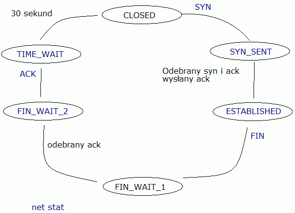
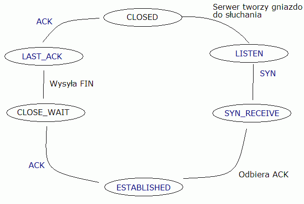
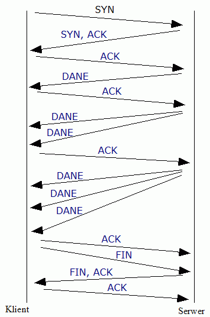

Serwer www (np. apache) odbiera segment TCP w postaci:
Uzupe³nij poni¿sz± tabelkê, która bêdzie odpowiedzi± serwera. Napisz, co wed³ug Ciebie jest w polu danych w pierwszym i drugim segmencie.
Inne pola IP
Inne pola TCP
Dane
Wypisz co najmniej 4 protoko³y warstwy aplikacji, które korzystaj± z UDP i 4 które korzystaj± z TCP.
UDP
TCP
Czy wszystkie wypisane protoko³y korzystaj±ce z UDP, zawsze z niego korzystaj±, czy zdarzaj± siê sytuacje, kiedy UDP jest zastêpowane prze TCP, je¶li tak, to w jakich sytuacjach?
Uzupe³nij tabelê:
URG
Potwierdzenie.
Natychmiastowe dostarczenie do wy¿szej warstwy.
Zerowanie. Resetuje po³±czenie, gdy wyst±pi niemo¿liwy do naprawy b³±d.
ACK, SYN
FIN
Za³ó¿my, ¿e host A wysy³a do serwera „echo” 10.2.2.6 port 7 (7/TCP) literê Q, w odpowiedzi dostaje t± sam± literê. Nastêpnie host A koñczy po³±czenie. Przedstaw wszystkie segmenty, które zostan± wys³ane i odebrane przez hosta A, zak³adaj±c, ¿e:
Port ¼ród³owy = 1030
Startowy numer sekwencyjny dla hosta A to: 44
Startowy numer sekwencyjny dla serwera „echo” to: 77
Zak³adamy ¿e ¿aden segment nie zginie, ani nie zostanie uszkodzony.
Jako pomoc mo¿esz wykorzystaæ ethereala.
Edytuj plik /etc/xined.d/echo i zamieñ linie disable = yes na disable = no i zrestaruj us³ugê xinetd poleceniem:
/etc/init.d/xinetd restart
Nastêpnie odpal ethereala i po³±cz siê telnetem na port 7 do komputera obok. Wy¶lij jeden znak i zakoñcz po³±czenie naciskaj±c kombinacjê klawiszy Ctrl-] i wpisz quit. Zatrzymaj ethereala i przefiltruj dane po tcp.
Kierunek
Port ¼ród³owy
Port docelowy
Seq
ACK
Flagi
Do serwera
1030
7
44
0
syn
Do hosta A
77
45
syn, ack
78
ack
psh,ack
Q
46
79
fin,ack
47
80
Klient próbuje po³±czyæ siê na serwer na port 80 przez protokó³ TCP, jak± dostanie odpowied¼, je¶li tam nie dzia³a ¿aden serwer który nas³uchuje na porcie 80? RST, ACK
Klient wysy³a segment UDP na port 53, ale nie ma tam ¿adnej us³ugi dzia³aj±cej na tym porcie, jak± odpowied¼ dostaje?
Je¶li nie znasz odpowiedzi, mo¿esz u¿yæ ethereala. Pomocne aplikacje: telnet (TCP), dig (udp) ICMP Port unavailable
Uzupe³nij diagram stanów, dla klienta i dla serwera:
klient

serwer

Przedstaw transmisje TCP w której okno zwiêksza siê do 3 segmentów. Za³ó¿my, ¿e okno na pocz±tku jest wielko¶ci jednego segmentu, nastêpnym razem, dwóch, potem trzech, a po nich zakoñczenie transmisji.
